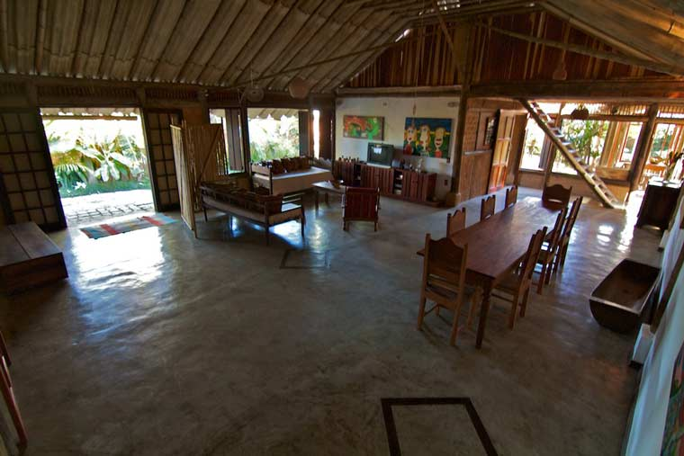
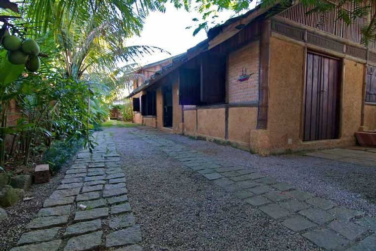
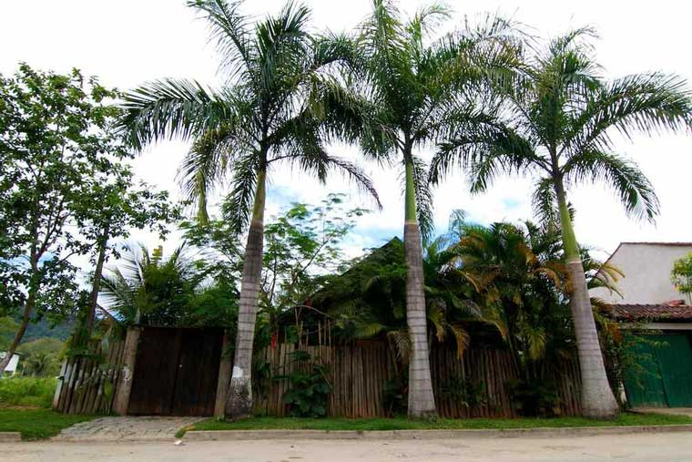

Bambu House
Photos and Informations
The caiçaras houses are made of bambu, mud and sapê and that's how our space was built. The confort created by the combination of organic materials gives the environment a feeling of confort and well being. The living room has a open space 12 meters high and 5 meters tall, with a big dining table for reunion, a 29' TV, DVD player and wireless internet.
At the kitchen, with a view to the garden, we offer fridge, stove, blender, microwaves and all required utensils for a complete dinner or just a quick snack. Access is guaranteed under the agreement of keeping the place clean and organized. The local supermarket is only 500 meters away.
Come feel yourself at home!
These are some photos of our house.

Come enjoy our space

Living room with TV area

External area with hammocks

Entrance and parking area

The bambu artwork gives our house a special touch